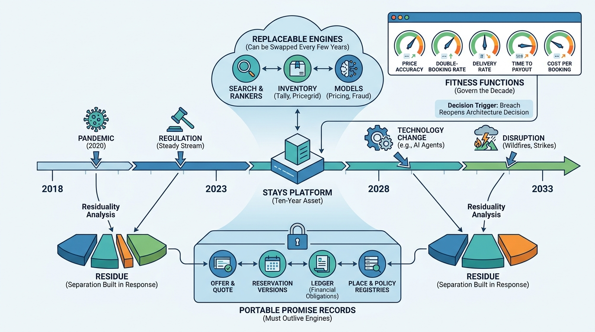

Part IX — LEADERSHIP: The Chief Architect's Agenda
Built for the Next Disruption: Evolving a Stays Platform Over a Decade

Image generated by Google Gemini (gemini-3-pro-image-preview)
Part IX — LEADERSHIP: The Chief Architect's Agenda

Image generated by Google Gemini (gemini-3-pro-image-preview)